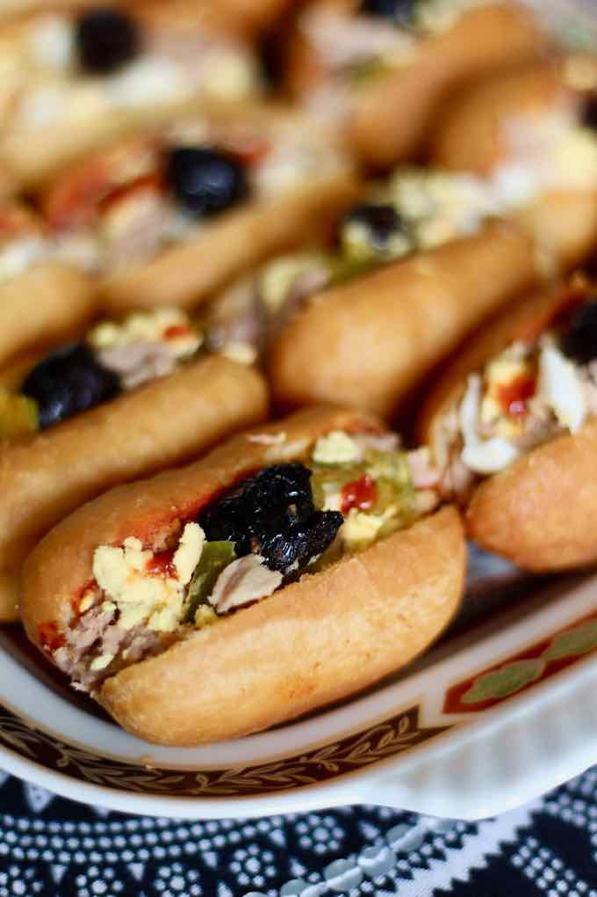

Fricassé

Description
Fricassé is a delicious small savory fried brioche of Tunisian origin, that is filled with
potato, harissa, tuna, black olives, hard-boiled egg and slata mechouia.
Ingredients
For the dough
-
4 cups flour , sifted
-
2½ teaspoons active dry yeast
-
4 tablespoons peanut oil
-
1½ tablespoon sugar
-
1 egg , beaten
-
1 tablespoon salt
-
⅔ cup warm water (or more if necessary)
For the filling
-
1 green bell pepper , grilled, peeled and seeded
-
1 red bell pepper , grilled, peeled and seeded
-
1 green hot pepper , grilled, peeled and seeded
-
3 tomatoes , peeled and seeded
-
2 cloves garlic
-
2 potatoes , boiled with their skin on
-
4 tablespoons olive oil
-
3 tablespoons harissa
-
Salt
-
Pepper
-
8 oz. canned tuna fillet in olive oil
-
2 hard-boiled eggs
-
Black olives , pitted
-
Vegetable oil (for frying)
Equipment
Steps
Dough
-
In the bowl of the stand-mixer, add the flour, sugar and yeast, and mix well.
-
Dig a well in the center of this mixture and pour in the egg and oil.
-
Start mixing at low speed and gradually stir in water until obtaining a homogeneous, light dough that
detaches from the sides of the bowl.
-
Add salt, increase the speed to medium, and knead for 5 minutes.
-
Cover the dough with a cloth and let it rise for 1h30 in a warm place, away from drafts.
-
Once the dough has doubled in volume, place it on a lightly floured work surface and punch it down.
-
Divide the dough into several pieces of about 1 ounce.
-
Shape each piece of dough into a stick to obtain oval buns.
-
Place them, with enough space between them, on a sheet lined with greased parchment paper.
-
Cover them with a clean cloth and let them rise again for 20 minutes.
-
Heat the frying oil in a deep frying pan and fry, at medium temperature, 3 at a time (not more).
-
Fry for about 2 to 3 minutes on each side until they are golden brown. Drain on paper towels.
Slata Mechouïa
-
Chop the peppers, and diced tomatoes, place them with the garlic in a mortar and crush everything slightly
with a pestle while avoiding to make a purée.
Add salt, pepper and hot olive oil and mix well. Set aside.
Rest of the stuffing
-
Finley dice the potatoes.
-
Cut the boiled eggs into small pieces or coarsely grate them.
-
Mix eggs and potatoes and add a little salt.
-
Add the crumbled tuna and mix.
Assembly
-
Cut the fricassé in half, but on one side to give them the shape of a sandwich.
-
Garnish the bottom inside with harissa and slata méchouïa.
-
Add some of the potato, egg and tuna mixture.
-
Garnish with one half black olive.
Notes
-
In order to obtain golden fried breads that are not too dark, place raw carrot sticks in the cooking oil.
Regularly change the carrot sticks while frying.
Home Page